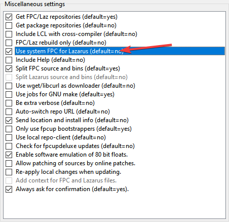

A instalação a partir dos repositórios é recomendada apenas ao FreePascal(FPC daqui em diante), porque o Lazarus precisa de uma instalação homeuser, do contrário você teria de alterar permissões em pastas de sistemas onde não é seguro mexer.
Nesta instalação, usaremos o FPC dos repositórios, porém o Lazarus será instalado pelo fpcupdeluge. Primeiro vamos instalar alguns pacotes essenciais:
sudo dnf install make automake gcc gcc-c++ kernel-devel
sudo dnf groupinstall "Development Tools" "Development Libraries"
sudo dnf install gdb zip unzip subversion binutils libX11-devel gtk2-devel gdk-pixbuf2-xlib
sudo dnf install cairo cairo-devel cairomm-devel
sudo dnf install pango pango-devel pangomm pangomm-devel
O código fonte do FPC também será requerido, então execute:
sudo dnf install fpc fpc-src qt5pas-devel
Com o FPC instalado no seu sistema você está apto a instalar o Lazarus via GIT ou fpcupdeluge. Para não ser muito repetitivo, escolha como desejará fazer a instalação do Lazarus:
Se decidir usar o fpcupdeluge, esteja atento em personalizar a instalação indo na opção Setup+ e ligando a opção Use system FPC for Lazarus:

A opção acima quando marcada fará o fpcupdeluge reutilizar o fpc pré-instalado, caso contrário você enfrentará um monte de downloads e compilações do fpc que na minha modesta opinião não vale a pena.